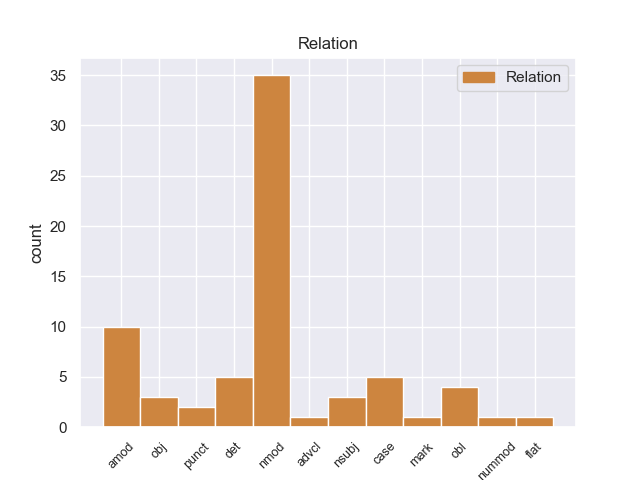
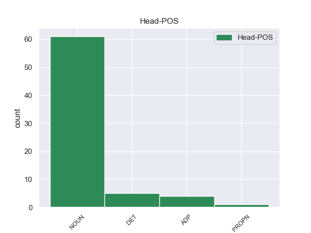
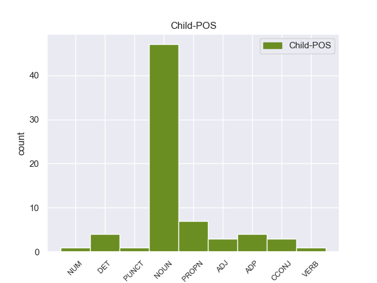

Distribution of features within this leaf



Agreement Rules sorted by frequency.
- When the dependent token is the nominal modifier(nmod) of the head token, and the head token is NOUN
1 El _ _ _ _ 0 _ _ _
2 ligando ligando NOUN _ Mood=Ind|Number=Sing|Person=3|Tense=Past|VerbForm=Fin 0 _ _ _
3 monóxido _ _ _ _ 0 _ _ _
4 de _ _ _ _ 0 _ _ _
5 carbono _ _ _ _ 0 _ _ _
6 puede _ _ _ _ 0 _ _ _
7 estar _ _ _ _ 0 _ _ _
8 unido _ _ _ _ 0 _ _ _
9 terminalmente terminalmente NOUN _ Mood=Ind|Number=Sing|Person=3|Tense=Pres|VerbForm=Fin 2 nmod _ _
10 a _ _ _ _ 0 _ _ _
11 un _ _ _ _ 0 _ _ _
12 solo _ _ _ _ 0 _ _ _
13 átomo _ _ _ _ 0 _ _ _
14 de _ _ _ _ 0 _ _ _
15 metal _ _ _ _ 0 _ _ _
16 o _ _ _ _ 0 _ _ _
17 en _ _ _ _ 0 _ _ _
18 puente _ _ _ _ 0 _ _ _
19 con _ _ _ _ 0 _ _ _
20 dos _ _ _ _ 0 _ _ _
21 o _ _ _ _ 0 _ _ _
22 más _ _ _ _ 0 _ _ _
23 átomos _ _ _ _ 0 _ _ _
24 de _ _ _ _ 0 _ _ _
25 metal _ _ _ _ 0 _ _ _
26 . _ _ _ _ 0 _ _ _
1 Su _ _ _ _ 0 _ _ _
2 función _ _ _ _ 0 _ _ _
3 es _ _ _ _ 0 _ _ _
4 determinar _ _ _ _ 0 _ _ _
5 la _ _ _ _ 0 _ _ _
6 concentración concentración NOUN _ Mood=Ind|Number=Sing|Person=3|Tense=Pres|VerbForm=Fin 0 _ _ _
7 final _ _ _ _ 0 _ _ _
8 de _ _ _ _ 0 _ _ _
9 la _ _ _ _ 0 _ _ _
10 orina _ _ _ _ 0 _ _ _
11 a _ _ _ _ 0 _ _ _
12 través _ _ _ _ 0 _ _ _
13 de _ _ _ _ 0 _ _ _
14 las _ _ _ _ 0 _ _ _
15 hormonas _ _ _ _ 0 _ _ _
16 aldosterona aldosterona DET _ Mood=Ind|Number=Sing|Person=3|Tense=Pres|VerbForm=Fin 6 amod _ _
17 y _ _ _ _ 0 _ _ _
18 vasopresina _ _ _ _ 0 _ _ _
19 ( _ _ _ _ 0 _ _ _
20 AVP _ _ _ _ 0 _ _ _
21 o _ _ _ _ 0 _ _ _
22 ADH _ _ _ _ 0 _ _ _
23 ) _ _ _ _ 0 _ _ _
24 . _ _ _ _ 0 _ _ _
1 Se _ _ _ _ 0 _ _ _
2 halla _ _ _ _ 0 _ _ _
3 a _ _ _ _ 0 _ _ _
4 una _ _ _ _ 0 _ _ _
5 distancia _ _ _ _ 0 _ _ _
6 aproximada _ _ _ _ 0 _ _ _
7 de _ _ _ _ 0 _ _ _
8 entre _ _ _ _ 0 _ _ _
9 1,5 _ _ _ _ 0 _ _ _
10 y _ _ _ _ 0 _ _ _
11 2,0 _ _ _ _ 0 _ _ _
12 kiloparsecs _ _ _ _ 0 _ _ _
13 de _ _ _ _ 0 _ _ _
14 el _ _ _ _ 0 _ _ _
15 Sol _ _ _ _ 0 _ _ _
16 según _ _ _ _ 0 _ _ _
17 diversos _ _ _ _ 0 _ _ _
18 científicos _ _ _ _ 0 _ _ _
19 , _ _ _ _ 0 _ _ _
20 lo _ _ _ _ 0 _ _ _
21 cual _ _ _ _ 0 _ _ _
22 junto _ _ _ _ 0 _ _ _
23 con _ _ _ _ 0 _ _ _
24 su _ _ _ _ 0 _ _ _
25 posición _ _ _ _ 0 _ _ _
26 en _ _ _ _ 0 _ _ _
27 el _ _ _ _ 0 _ _ _
28 cielo _ _ _ _ 0 _ _ _
29 indica _ _ _ _ 0 _ _ _
30 que _ _ _ _ 0 _ _ _
31 pertenece _ _ _ _ 0 _ _ _
32 posiblemente _ _ _ _ 0 _ _ _
33 a _ _ _ _ 0 _ _ _
34 la _ _ _ _ 0 _ _ _
35 asociación _ _ _ _ 0 _ _ _
36 estelar _ _ _ _ 0 _ _ _
37 Sagittarius _ _ _ _ 0 _ _ _
38 OB1 _ _ _ _ 0 _ _ _
39 , _ _ _ _ 0 _ _ _
40 la _ _ _ _ 0 _ _ _
41 misma _ _ _ _ 0 _ _ _
42 a _ _ _ _ 0 _ _ _
43 la _ _ _ _ 0 _ _ _
44 que _ _ _ _ 0 _ _ _
45 pertenece _ _ _ _ 0 _ _ _
46 por _ _ _ _ 0 _ _ _
47 ejemplo _ _ _ _ 0 _ _ _
48 la _ _ _ _ 0 _ _ _
49 Nebulosa _ _ _ _ 0 _ _ _
50 de _ _ _ _ 0 _ _ _
51 la _ _ _ _ 0 _ _ _
52 Laguna _ _ _ _ 0 _ _ _
53 , _ _ _ _ 0 _ _ _
54 y _ _ _ _ 0 _ _ _
55 su _ _ _ _ 0 _ _ _
56 luminosidad _ _ _ _ 0 _ _ _
57 de _ _ _ _ 0 _ _ _
58 acuerdo _ _ _ _ 0 _ _ _
59 con _ _ _ _ 0 _ _ _
60 diversos _ _ _ _ 0 _ _ _
61 estudios _ _ _ _ 0 _ _ _
62 ha _ _ _ _ 0 _ _ _
63 sido _ _ _ _ 0 _ _ _
64 estimada _ _ _ _ 0 _ _ _
65 entre _ _ _ _ 0 _ _ _
66 200.000 _ _ _ _ 0 _ _ _
67 y _ _ _ _ 0 _ _ _
68 300.000 _ _ _ _ 0 _ _ _
69 veces _ _ _ _ 0 _ _ _
70 la _ _ _ _ 0 _ _ _
71 de _ _ _ _ 0 _ _ _
72 el _ _ _ _ 0 _ _ _
73 Sol _ _ _ _ 0 _ _ _
74 , _ _ _ _ 0 _ _ _
75 lo _ _ _ _ 0 _ _ _
76 que _ _ _ _ 0 _ _ _
77 la _ _ _ _ 0 _ _ _
78 sitúa sitúa NOUN _ Mood=Ind|Number=Sing|Person=3|Tense=Past|VerbForm=Fin 0 _ _ _
79 entre _ _ _ _ 0 _ _ _
80 las _ _ _ _ 0 _ _ _
81 estrellas _ _ _ _ 0 _ _ _
82 más _ _ _ _ 0 _ _ _
83 luminosas luminosas NOUN _ Mood=Ind|Number=Sing|Person=3|Tense=Pres|VerbForm=Fin 78 case _ _
84 conocidas _ _ _ _ 0 _ _ _
85 . _ _ _ _ 0 _ _ _
1 Sabía _ _ _ _ 0 _ _ _
2 dónde _ _ _ _ 0 _ _ _
3 había _ _ _ _ 0 _ _ _
4 estado _ _ _ _ 0 _ _ _
5 y _ _ _ _ 0 _ _ _
6 dónde _ _ _ _ 0 _ _ _
7 estaba _ _ _ _ 0 _ _ _
8 , _ _ _ _ 0 _ _ _
9 a _ _ _ _ 0 _ _ _
10 mí _ _ _ _ 0 _ _ _
11 nunca _ _ _ _ 0 _ _ _
12 me _ _ _ _ 0 _ _ _
13 contó _ _ _ _ 0 _ _ _
14 detalles _ _ _ _ 0 _ _ _
15 de _ _ _ _ 0 _ _ _
16 lo _ _ _ _ 0 _ _ _
17 que _ _ _ _ 0 _ _ _
18 había _ _ _ _ 0 _ _ _
19 vivido _ _ _ _ 0 _ _ _
20 ahí _ _ _ _ 0 _ _ _
21 adentro _ _ _ _ 0 _ _ _
22 , _ _ _ _ 0 _ _ _
23 lo _ _ _ _ 0 _ _ _
24 que _ _ _ _ 0 _ _ _
25 sí _ _ _ _ 0 _ _ _
26 me _ _ _ _ 0 _ _ _
27 contó contó NOUN _ Mood=Ind|Number=Sing|Person=3|Tense=Past|VerbForm=Fin 0 _ _ _
28 es _ _ _ _ 0 _ _ _
29 que _ _ _ _ 0 _ _ _
30 lo _ _ _ _ 0 _ _ _
31 habían _ _ _ _ 0 _ _ _
32 torturado _ _ _ _ 0 _ _ _
33 delante _ _ _ _ 0 _ _ _
34 de _ _ _ _ 0 _ _ _
35 su _ _ _ _ 0 _ _ _
36 madre _ _ _ _ 0 _ _ _
37 para _ _ _ _ 0 _ _ _
38 que _ _ _ _ 0 _ _ _
39 ella _ _ _ _ 0 _ _ _
40 diera diera NOUN _ Mood=Ind|Number=Sing|Person=3|Tense=Past|VerbForm=Fin 27 obj _ _
41 los _ _ _ _ 0 _ _ _
42 datos _ _ _ _ 0 _ _ _
43 de _ _ _ _ 0 _ _ _
44 una _ _ _ _ 0 _ _ _
45 hipoteca _ _ _ _ 0 _ _ _
46 o _ _ _ _ 0 _ _ _
47 de _ _ _ _ 0 _ _ _
48 una _ _ _ _ 0 _ _ _
49 casa _ _ _ _ 0 _ _ _
50 que _ _ _ _ 0 _ _ _
51 tenían _ _ _ _ 0 _ _ _
52 . _ _ _ _ 0 _ _ _
1 La _ _ _ _ 0 _ _ _
2 disminución _ _ _ _ 0 _ _ _
3 de _ _ _ _ 0 _ _ _
4 las _ _ _ _ 0 _ _ _
5 emisiones _ _ _ _ 0 _ _ _
6 de _ _ _ _ 0 _ _ _
7 óxidos _ _ _ _ 0 _ _ _
8 de _ _ _ _ 0 _ _ _
9 nitrógeno _ _ _ _ 0 _ _ _
10 se _ _ _ _ 0 _ _ _
11 hace _ _ _ _ 0 _ _ _
12 empleando empleando DET _ Mood=Ind|Number=Sing|Person=3|Tense=Pres|VerbForm=Fin 29 det _ _
13 catalizadores _ _ _ _ 0 _ _ _
14 de _ _ _ _ 0 _ _ _
15 tres _ _ _ _ 0 _ _ _
16 vías _ _ _ _ 0 _ _ _
17 ( _ _ _ _ 0 _ _ _
18 los _ _ _ _ 0 _ _ _
19 de _ _ _ _ 0 _ _ _
20 dos _ _ _ _ 0 _ _ _
21 vías _ _ _ _ 0 _ _ _
22 no _ _ _ _ 0 _ _ _
23 tratan _ _ _ _ 0 _ _ _
24 estos _ _ _ _ 0 _ _ _
25 gases _ _ _ _ 0 _ _ _
26 ) _ _ _ _ 0 _ _ _
27 que _ _ _ _ 0 _ _ _
28 los _ _ _ _ 0 _ _ _
29 reducen reducen NOUN _ Mood=Ind|Number=Sing|Person=3|Tense=Past|VerbForm=Fin 0 _ _ _
30 a _ _ _ _ 0 _ _ _
31 nitrógeno _ _ _ _ 0 _ _ _
32 y _ _ _ _ 0 _ _ _
33 oxígeno _ _ _ _ 0 _ _ _
34 moleculares _ _ _ _ 0 _ _ _
35 . _ _ _ _ 0 _ _ _
1 Massimov massimo PROPN _ Mood=Ind|Number=Sing|Person=3|Tense=Past|VerbForm=Fin 2 nsubj _ _
2 designó designó NOUN _ Mood=Ind|Number=Sing|Person=3|Tense=Pres|VerbForm=Fin 0 _ _ _
3 a _ _ _ _ 0 _ _ _
4 Akhmetov _ _ _ _ 0 _ _ _
5 como _ _ _ _ 0 _ _ _
6 Ministro _ _ _ _ 0 _ _ _
7 de _ _ _ _ 0 _ _ _
8 Defensa _ _ _ _ 0 _ _ _
9 reemplazando _ _ _ _ 0 _ _ _
10 a _ _ _ _ 0 _ _ _
11 Mukhtar _ _ _ _ 0 _ _ _
12 Altynbayev _ _ _ _ 0 _ _ _
13 y _ _ _ _ 0 _ _ _
14 designó _ _ _ _ 0 _ _ _
15 formalmente _ _ _ _ 0 _ _ _
16 a _ _ _ _ 0 _ _ _
17 Aslan _ _ _ _ 0 _ _ _
18 Musin _ _ _ _ 0 _ _ _
19 , _ _ _ _ 0 _ _ _
20 Ministro _ _ _ _ 0 _ _ _
21 de _ _ _ _ 0 _ _ _
22 Economía _ _ _ _ 0 _ _ _
23 y _ _ _ _ 0 _ _ _
24 Presupuestos _ _ _ _ 0 _ _ _
25 , _ _ _ _ 0 _ _ _
26 como _ _ _ _ 0 _ _ _
27 Prime _ _ _ _ 0 _ _ _
28 Minister _ _ _ _ 0 _ _ _
29 suplente _ _ _ _ 0 _ _ _
30 . _ _ _ _ 0 _ _ _
1 El _ _ _ _ 0 _ _ _
2 virus _ _ _ _ 0 _ _ _
3 AH1N1 _ _ _ _ 0 _ _ _
4 se _ _ _ _ 0 _ _ _
5 descubrió descubrió NOUN _ Mood=Ind|Number=Sing|Person=3|Tense=Past|VerbForm=Fin 0 _ _ _
6 en _ _ _ _ 0 _ _ _
7 abril _ _ _ _ 0 _ _ _
8 de _ _ _ _ 0 _ _ _
9 el _ _ _ _ 0 _ _ _
10 año _ _ _ _ 0 _ _ _
11 pasado _ _ _ _ 0 _ _ _
12 en _ _ _ _ 0 _ _ _
13 Norteamérica _ _ _ _ 0 _ _ _
14 y _ _ _ _ 0 _ _ _
15 se _ _ _ _ 0 _ _ _
16 convirtió _ _ _ _ 0 _ _ _
17 en _ _ _ _ 0 _ _ _
18 la _ _ _ _ 0 _ _ _
19 primera _ _ _ _ 0 _ _ _
20 pandemia pandemia NOUN _ Mood=Ind|Number=Sing|Person=3|Tense=Pres|VerbForm=Fin 5 obl _ _
21 de _ _ _ _ 0 _ _ _
22 el _ _ _ _ 0 _ _ _
23 siglo _ _ _ _ 0 _ _ _
24 XXI _ _ _ _ 0 _ _ _
25 debido _ _ _ _ 0 _ _ _
26 a _ _ _ _ 0 _ _ _
27 su _ _ _ _ 0 _ _ _
28 rápida _ _ _ _ 0 _ _ _
29 propagación _ _ _ _ 0 _ _ _
30 geográfica _ _ _ _ 0 _ _ _
31 ya _ _ _ _ 0 _ _ _
32 los _ _ _ _ 0 _ _ _
33 temores _ _ _ _ 0 _ _ _
34 que _ _ _ _ 0 _ _ _
35 generó _ _ _ _ 0 _ _ _
36 por _ _ _ _ 0 _ _ _
37 tratar _ _ _ _ 0 _ _ _
38 se _ _ _ _ 0 _ _ _
39 de _ _ _ _ 0 _ _ _
40 un _ _ _ _ 0 _ _ _
41 virus _ _ _ _ 0 _ _ _
42 desconocido _ _ _ _ 0 _ _ _
43 y _ _ _ _ 0 _ _ _
44 con _ _ _ _ 0 _ _ _
45 posibilidades _ _ _ _ 0 _ _ _
46 de _ _ _ _ 0 _ _ _
47 mutar _ _ _ _ 0 _ _ _
48 . _ _ _ _ 0 _ _ _
1 Desde _ _ _ _ 0 _ _ _
2 diciembre _ _ _ _ 0 _ _ _
3 de _ _ _ _ 0 _ _ _
4 2010 _ _ _ _ 0 _ _ _
5 a _ _ _ _ 0 _ _ _
6 el _ _ _ _ 0 _ _ _
7 31 _ _ _ _ 0 _ _ _
8 de _ _ _ _ 0 _ _ _
9 junio _ _ _ _ 0 _ _ _
10 de _ _ _ _ 0 _ _ _
11 2011 _ _ _ _ 0 _ _ _
12 , _ _ _ _ 0 _ _ _
13 los _ _ _ _ 0 _ _ _
14 viajeros _ _ _ _ 0 _ _ _
15 que _ _ _ _ 0 _ _ _
16 reserven reserven NOUN _ Mood=Ind|Number=Sing|Person=3|Tense=Past|VerbForm=Fin 0 _ _ _
17 a _ _ _ _ 0 _ _ _
18 través _ _ _ _ 0 _ _ _
19 de _ _ _ _ 0 _ _ _
20 Agoda.es _ _ _ _ 0 _ _ _
21 podrán _ _ _ _ 0 _ _ _
22 asegurar _ _ _ _ 0 _ _ _
23 se _ _ _ _ 0 _ _ _
24 tarifas _ _ _ _ 0 _ _ _
25 con _ _ _ _ 0 _ _ _
26 descuento _ _ _ _ 0 _ _ _
27 en _ _ _ _ 0 _ _ _
28 los _ _ _ _ 0 _ _ _
29 resorts _ _ _ _ 0 _ _ _
30 de _ _ _ _ 0 _ _ _
31 Maldivas _ _ _ _ 0 _ _ _
32 y _ _ _ _ 0 _ _ _
33 para _ _ _ _ 0 _ _ _
34 mayor _ _ _ _ 0 _ _ _
35 comodidad _ _ _ _ 0 _ _ _
36 volar _ _ _ _ 0 _ _ _
37 directamente _ _ _ _ 0 _ _ _
38 desde _ _ _ _ 0 _ _ _
39 Bangkok _ _ _ _ 0 _ _ _
40 a _ _ _ _ 0 _ _ _
41 Malé _ _ _ _ 0 _ _ _
42 con _ _ _ _ 0 _ _ _
43 Bangkok bangkok ADP _ Mood=Ind|Number=Sing|Person=3|Tense=Past|VerbForm=Fin 16 punct _ _
44 Airways _ _ _ _ 0 _ _ _
45 la _ _ _ _ 0 _ _ _
46 única _ _ _ _ 0 _ _ _
47 línea _ _ _ _ 0 _ _ _
48 aérea _ _ _ _ 0 _ _ _
49 con _ _ _ _ 0 _ _ _
50 tres _ _ _ _ 0 _ _ _
51 vuelos _ _ _ _ 0 _ _ _
52 semanales _ _ _ _ 0 _ _ _
53 . _ _ _ _ 0 _ _ _
1 ( _ _ _ _ 0 _ _ _
2 Un _ _ _ _ 0 _ _ _
3 ejemplo _ _ _ _ 0 _ _ _
4 es _ _ _ _ 0 _ _ _
5 el _ _ _ _ 0 _ _ _
6 Pakki _ _ _ _ 0 _ _ _
7 una _ _ _ _ 0 _ _ _
8 variedad variedad NOUN _ Mood=Ind|Number=Sing|Person=3|Tense=Pres|VerbForm=Fin 14 nmod _ _
9 de _ _ _ _ 0 _ _ _
10 Hyderabadi _ _ _ _ 0 _ _ _
11 biryani _ _ _ _ 0 _ _ _
12 ) _ _ _ _ 0 _ _ _
13 se _ _ _ _ 0 _ _ _
14 emplea emplea DET _ Mood=Ind|Number=Sing|Person=3|Tense=Pres|VerbForm=Fin 0 _ _ _
15 el _ _ _ _ 0 _ _ _
16 azafrán _ _ _ _ 0 _ _ _
17 en _ _ _ _ 0 _ _ _
18 la _ _ _ _ 0 _ _ _
19 India _ _ _ _ 0 _ _ _
20 en _ _ _ _ 0 _ _ _
21 los _ _ _ _ 0 _ _ _
22 dulces _ _ _ _ 0 _ _ _
23 y _ _ _ _ 0 _ _ _
24 postres _ _ _ _ 0 _ _ _
25 cuya _ _ _ _ 0 _ _ _
26 base _ _ _ _ 0 _ _ _
27 es _ _ _ _ 0 _ _ _
28 la _ _ _ _ 0 _ _ _
29 leche _ _ _ _ 0 _ _ _
30 tales _ _ _ _ 0 _ _ _
31 como _ _ _ _ 0 _ _ _
32 el _ _ _ _ 0 _ _ _
33 gulab _ _ _ _ 0 _ _ _
34 jamun _ _ _ _ 0 _ _ _
35 , _ _ _ _ 0 _ _ _
36 kulfi _ _ _ _ 0 _ _ _
37 , _ _ _ _ 0 _ _ _
38 double _ _ _ _ 0 _ _ _
39 ka _ _ _ _ 0 _ _ _
40 meetha _ _ _ _ 0 _ _ _
41 , _ _ _ _ 0 _ _ _
42 y _ _ _ _ 0 _ _ _
43 el _ _ _ _ 0 _ _ _
44 " _ _ _ _ 0 _ _ _
45 lassi _ _ _ _ 0 _ _ _
46 a _ _ _ _ 0 _ _ _
47 el _ _ _ _ 0 _ _ _
48 azafrán _ _ _ _ 0 _ _ _
49 " _ _ _ _ 0 _ _ _
50 , _ _ _ _ 0 _ _ _
51 que _ _ _ _ 0 _ _ _
52 es _ _ _ _ 0 _ _ _
53 una _ _ _ _ 0 _ _ _
54 mezcla _ _ _ _ 0 _ _ _
55 de _ _ _ _ 0 _ _ _
56 Jodhpuri _ _ _ _ 0 _ _ _
57 yogurt _ _ _ _ 0 _ _ _
58 para _ _ _ _ 0 _ _ _
59 beber _ _ _ _ 0 _ _ _
60 . _ _ _ _ 0 _ _ _
1 La _ _ _ _ 0 _ _ _
2 energía _ _ _ _ 0 _ _ _
3 de _ _ _ _ 0 _ _ _
4 las _ _ _ _ 0 _ _ _
5 partículas _ _ _ _ 0 _ _ _
6 puede _ _ _ _ 0 _ _ _
7 llevar _ _ _ _ 0 _ _ _
8 a _ _ _ _ 0 _ _ _
9 la _ _ _ _ 0 _ _ _
10 excitación excitación ADP _ Mood=Ind|Number=Sing|Person=3|Tense=Past|VerbForm=Fin 0 _ _ _
11 de _ _ _ _ 0 _ _ _
12 ondas _ _ _ _ 0 _ _ _
13 de _ _ _ _ 0 _ _ _
14 plasma plasma NOUN _ Mood=Ind|Number=Sing|Person=3|Tense=Pres|VerbForm=Fin 10 nmod _ _
15 . _ _ _ _ 0 _ _ _
1 Ellery _ _ _ _ 0 _ _ _
2 encuentra _ _ _ _ 0 _ _ _
3 alguna _ _ _ _ 0 _ _ _
4 evidencia _ _ _ _ 0 _ _ _
5 de _ _ _ _ 0 _ _ _
6 que _ _ _ _ 0 _ _ _
7 Jim _ _ _ _ 0 _ _ _
8 tiene _ _ _ _ 0 _ _ _
9 la _ _ _ _ 0 _ _ _
10 intención _ _ _ _ 0 _ _ _
11 de _ _ _ _ 0 _ _ _
12 envenenar _ _ _ _ 0 _ _ _
13 a _ _ _ _ 0 _ _ _
14 Nora _ _ _ _ 0 _ _ _
15 y _ _ _ _ 0 _ _ _
16 , _ _ _ _ 0 _ _ _
17 después _ _ _ _ 0 _ _ _
18 de _ _ _ _ 0 _ _ _
19 la _ _ _ _ 0 _ _ _
20 boda _ _ _ _ 0 _ _ _
21 , _ _ _ _ 0 _ _ _
22 ella _ _ _ _ 0 _ _ _
23 muestra muestra NOUN _ Mood=Ind|Number=Sing|Person=3|Tense=Past|VerbForm=Fin 0 _ _ _
24 algunos _ _ _ _ 0 _ _ _
25 síntomas síntomas NOUN _ Mood=Ind|Number=Sing|Person=3|Tense=Pres|VerbForm=Fin 23 advcl _ _
26 de _ _ _ _ 0 _ _ _
27 envenenamiento _ _ _ _ 0 _ _ _
28 por _ _ _ _ 0 _ _ _
29 arsénico _ _ _ _ 0 _ _ _
30 . _ _ _ _ 0 _ _ _
1 " _ _ _ _ 0 _ _ _
2 La _ _ _ _ 0 _ _ _
3 vacuna vacuna ADP _ Mood=Ind|Number=Sing|Person=3|Tense=Pres|VerbForm=Fin 28 det _ _
4 contra _ _ _ _ 0 _ _ _
5 el _ _ _ _ 0 _ _ _
6 virus _ _ _ _ 0 _ _ _
7 de _ _ _ _ 0 _ _ _
8 papiloma _ _ _ _ 0 _ _ _
9 humano _ _ _ _ 0 _ _ _
10 o _ _ _ _ 0 _ _ _
11 VPH _ _ _ _ 0 _ _ _
12 ( _ _ _ _ 0 _ _ _
13 HPV _ _ _ _ 0 _ _ _
14 , _ _ _ _ 0 _ _ _
15 según _ _ _ _ 0 _ _ _
16 su _ _ _ _ 0 _ _ _
17 sigla _ _ _ _ 0 _ _ _
18 en _ _ _ _ 0 _ _ _
19 inglés _ _ _ _ 0 _ _ _
20 ) _ _ _ _ 0 _ _ _
21 es _ _ _ _ 0 _ _ _
22 esencial _ _ _ _ 0 _ _ _
23 en _ _ _ _ 0 _ _ _
24 esta _ _ _ _ 0 _ _ _
25 etapa _ _ _ _ 0 _ _ _
26 porque _ _ _ _ 0 _ _ _
27 se _ _ _ _ 0 _ _ _
28 coloca coloca DET _ Mood=Ind|Number=Sing|Person=3|Tense=Pres|VerbForm=Fin 0 _ _ _
29 a _ _ _ _ 0 _ _ _
30 niñas _ _ _ _ 0 _ _ _
31 de _ _ _ _ 0 _ _ _
32 11 _ _ _ _ 0 _ _ _
33 años _ _ _ _ 0 _ _ _
34 , _ _ _ _ 0 _ _ _
35 edad _ _ _ _ 0 _ _ _
36 en _ _ _ _ 0 _ _ _
37 la _ _ _ _ 0 _ _ _
38 que _ _ _ _ 0 _ _ _
39 , _ _ _ _ 0 _ _ _
40 se _ _ _ _ 0 _ _ _
41 calcula _ _ _ _ 0 _ _ _
42 , _ _ _ _ 0 _ _ _
43 aun _ _ _ _ 0 _ _ _
44 no _ _ _ _ 0 _ _ _
45 tuvieron _ _ _ _ 0 _ _ _
46 contacto _ _ _ _ 0 _ _ _
47 con _ _ _ _ 0 _ _ _
48 el _ _ _ _ 0 _ _ _
49 virus _ _ _ _ 0 _ _ _
50 . _ _ _ _ 0 _ _ _
1 Hace _ _ _ _ 0 _ _ _
2 bien _ _ _ _ 0 _ _ _
3 poco _ _ _ _ 0 _ _ _
4 que _ _ _ _ 0 _ _ _
5 los _ _ _ _ 0 _ _ _
6 controladores _ _ _ _ 0 _ _ _
7 aéreos _ _ _ _ 0 _ _ _
8 se _ _ _ _ 0 _ _ _
9 declararon _ _ _ _ 0 _ _ _
10 en _ _ _ _ 0 _ _ _
11 huelga _ _ _ _ 0 _ _ _
12 y _ _ _ _ 0 _ _ _
13 no _ _ _ _ 0 _ _ _
14 faltaron _ _ _ _ 0 _ _ _
15 empresarios _ _ _ _ 0 _ _ _
16 que _ _ _ _ 0 _ _ _
17 pusieron pusieron NOUN _ Mood=Ind|Number=Sing|Person=3|Tense=Pres|VerbForm=Fin 0 _ _ _
18 el _ _ _ _ 0 _ _ _
19 grito _ _ _ _ 0 _ _ _
20 en _ _ _ _ 0 _ _ _
21 el _ _ _ _ 0 _ _ _
22 cielo _ _ _ _ 0 _ _ _
23 contra _ _ _ _ 0 _ _ _
24 los _ _ _ _ 0 _ _ _
25 " _ _ _ _ 0 _ _ _
26 privilegiados _ _ _ _ 0 _ _ _
27 " _ _ _ _ 0 _ _ _
28 que _ _ _ _ 0 _ _ _
29 se _ _ _ _ 0 _ _ _
30 ponen _ _ _ _ 0 _ _ _
31 en _ _ _ _ 0 _ _ _
32 huelga _ _ _ _ 0 _ _ _
33 y _ _ _ _ 0 _ _ _
34 " _ _ _ _ 0 _ _ _
35 secuestran _ _ _ _ 0 _ _ _
36 un _ _ _ _ 0 _ _ _
37 país _ _ _ _ 0 _ _ _
38 " _ _ _ _ 0 _ _ _
39 porque _ _ _ _ 0 _ _ _
40 tienen tienen VERB _ Mood=Ind|Number=Sing|Person=3|Tense=Past|VerbForm=Fin 17 mark _ _
41 en _ _ _ _ 0 _ _ _
42 su _ _ _ _ 0 _ _ _
43 mano _ _ _ _ 0 _ _ _
44 un _ _ _ _ 0 _ _ _
45 servicio _ _ _ _ 0 _ _ _
46 público _ _ _ _ 0 _ _ _
47 como _ _ _ _ 0 _ _ _
48 los _ _ _ _ 0 _ _ _
49 aeropuertos _ _ _ _ 0 _ _ _
50 . _ _ _ _ 0 _ _ _
1 Austria _ _ _ _ 0 _ _ _
2 presenta _ _ _ _ 0 _ _ _
3 una _ _ _ _ 0 _ _ _
4 de _ _ _ _ 0 _ _ _
5 las _ _ _ _ 0 _ _ _
6 tasas tasas NOUN _ Mood=Ind|Number=Sing|Person=3|Tense=Pres|VerbForm=Fin 0 _ _ _
7 de _ _ _ _ 0 _ _ _
8 natalidad _ _ _ _ 0 _ _ _
9 más _ _ _ _ 0 _ _ _
10 bajas _ _ _ _ 0 _ _ _
11 de _ _ _ _ 0 _ _ _
12 el _ _ _ _ 0 _ _ _
13 mundo _ _ _ _ 0 _ _ _
14 , _ _ _ _ 0 _ _ _
15 que _ _ _ _ 0 _ _ _
16 en _ _ _ _ 0 _ _ _
17 el _ _ _ _ 0 _ _ _
18 2005 _ _ _ _ 0 _ _ _
19 fue _ _ _ _ 0 _ _ _
20 de _ _ _ _ 0 _ _ _
21 8,81 _ _ _ _ 0 _ _ _
22 % % NOUN _ Mood=Ind|Number=Sing|Person=3|Tense=Pres|VerbForm=Fin 6 nummod _ _
23 , _ _ _ _ 0 _ _ _
24 o _ _ _ _ 0 _ _ _
25 sea _ _ _ _ 0 _ _ _
26 aproximadamente _ _ _ _ 0 _ _ _
27 sólo _ _ _ _ 0 _ _ _
28 9 _ _ _ _ 0 _ _ _
29 nacimientos _ _ _ _ 0 _ _ _
30 cada _ _ _ _ 0 _ _ _
31 1.000 _ _ _ _ 0 _ _ _
32 habitantes _ _ _ _ 0 _ _ _
33 a _ _ _ _ 0 _ _ _
34 el _ _ _ _ 0 _ _ _
35 año _ _ _ _ 0 _ _ _
36 ; _ _ _ _ 0 _ _ _
1 El _ _ _ _ 0 _ _ _
2 usuario _ _ _ _ 0 _ _ _
3 de _ _ _ _ 0 _ _ _
4 contenidos _ _ _ _ 0 _ _ _
5 digitales _ _ _ _ 0 _ _ _
6 de _ _ _ _ 0 _ _ _
7 Amazon _ _ _ _ 0 _ _ _
8 obtiene _ _ _ _ 0 _ _ _
9 almacenamiento _ _ _ _ 0 _ _ _
10 gratuito _ _ _ _ 0 _ _ _
11 en _ _ _ _ 0 _ _ _
12 la _ _ _ _ 0 _ _ _
13 Amazon _ _ _ _ 0 _ _ _
14 Cloud _ _ _ _ 0 _ _ _
15 , _ _ _ _ 0 _ _ _
16 e _ _ _ _ 0 _ _ _
17 incluye _ _ _ _ 0 _ _ _
18 una _ _ _ _ 0 _ _ _
19 aplicación _ _ _ _ 0 _ _ _
20 de _ _ _ _ 0 _ _ _
21 correo _ _ _ _ 0 _ _ _
22 electrónico _ _ _ _ 0 _ _ _
23 que _ _ _ _ 0 _ _ _
24 permite permite DET _ Mood=Ind|Number=Sing|Person=3|Tense=Past|VerbForm=Fin 0 _ _ _
25 fusionar fusionar NOUN _ Mood=Ind|Number=Sing|Person=3|Tense=Past|VerbForm=Fin 24 amod _ _
26 webmails _ _ _ _ 0 _ _ _
27 como _ _ _ _ 0 _ _ _
28 Gmail _ _ _ _ 0 _ _ _
29 , _ _ _ _ 0 _ _ _
30 Yahoo! _ _ _ _ 0 _ _ _
31 , _ _ _ _ 0 _ _ _
32 Hotmail _ _ _ _ 0 _ _ _
33 , _ _ _ _ 0 _ _ _
34 AOL _ _ _ _ 0 _ _ _
35 Mail _ _ _ _ 0 _ _ _
36 , _ _ _ _ 0 _ _ _
37 etc. _ _ _ _ 0 _ _ _
38 en _ _ _ _ 0 _ _ _
39 una _ _ _ _ 0 _ _ _
40 sola _ _ _ _ 0 _ _ _
41 bandeja _ _ _ _ 0 _ _ _
42 de _ _ _ _ 0 _ _ _
43 entrada _ _ _ _ 0 _ _ _
44 . _ _ _ _ 0 _ _ _
1 Le le PROPN _ Mood=Ind|Number=Sing|Person=3|Tense=Pres|VerbForm=Fin 2 det _ _
2 hizo hizo ADP _ Mood=Ind|Number=Sing|Person=3|Tense=Pres|VerbForm=Fin 0 _ _ _
3 22 _ _ _ _ 0 _ _ _
4 a _ _ _ _ 0 _ _ _
5 Washington _ _ _ _ 0 _ _ _
6 Wizards _ _ _ _ 0 _ _ _
7 en _ _ _ _ 0 _ _ _
8 el _ _ _ _ 0 _ _ _
9 que _ _ _ _ 0 _ _ _
10 fue _ _ _ _ 0 _ _ _
11 su _ _ _ _ 0 _ _ _
12 mejor _ _ _ _ 0 _ _ _
13 partido _ _ _ _ 0 _ _ _
14 como _ _ _ _ 0 _ _ _
15 novato _ _ _ _ 0 _ _ _
16 . _ _ _ _ 0 _ _ _
1 Hatem hatem ADP _ Mood=Ind|Number=Sing|Person=3|Tense=Pres|VerbForm=Fin 0 _ _ _
2 Trabelsi trabelsi NOUN _ Mood=Ind|Number=Sing|Person=3|Tense=Pres|VerbForm=Fin 1 flat _ _
3 ( _ _ _ _ 0 _ _ _
4 en _ _ _ _ 0 _ _ _
5 árabe _ _ _ _ 0 _ _ _
6 : _ _ _ _ 0 _ _ _
7 حاتم _ _ _ _ 0 _ _ _
8 الطرابلسي _ _ _ _ 0 _ _ _
9 , _ _ _ _ 0 _ _ _
10 Hatem _ _ _ _ 0 _ _ _
11 Trabelsi _ _ _ _ 0 _ _ _
12 , _ _ _ _ 0 _ _ _
13 nacido _ _ _ _ 0 _ _ _
14 el _ _ _ _ 0 _ _ _
15 25 _ _ _ _ 0 _ _ _
16 de _ _ _ _ 0 _ _ _
17 enero _ _ _ _ 0 _ _ _
18 de _ _ _ _ 0 _ _ _
19 1977 _ _ _ _ 0 _ _ _
20 en _ _ _ _ 0 _ _ _
21 Aryanah _ _ _ _ 0 _ _ _
22 , _ _ _ _ 0 _ _ _
23 Túnez _ _ _ _ 0 _ _ _
24 ) _ _ _ _ 0 _ _ _
25 es _ _ _ _ 0 _ _ _
26 un _ _ _ _ 0 _ _ _
27 ex _ _ _ _ 0 _ _ _
28 futbolista _ _ _ _ 0 _ _ _
29 de _ _ _ _ 0 _ _ _
30 Túnez _ _ _ _ 0 _ _ _
31 . _ _ _ _ 0 _ _ _
1 Esta _ _ _ _ 0 _ _ _
2 se _ _ _ _ 0 _ _ _
3 hizo hizo DET _ Mood=Ind|Number=Sing|Person=3|Tense=Pres|VerbForm=Fin 0 _ _ _
4 la _ _ _ _ 0 _ _ _
5 parte _ _ _ _ 0 _ _ _
6 de _ _ _ _ 0 _ _ _
7 el _ _ _ _ 0 _ _ _
8 Decapolis _ _ _ _ 0 _ _ _
9 y _ _ _ _ 0 _ _ _
10 se _ _ _ _ 0 _ _ _
11 puso puso DET _ Mood=Ind|Number=Sing|Person=3|Tense=Past|VerbForm=Fin 3 obl _ _
12 cada _ _ _ _ 0 _ _ _
13 vez _ _ _ _ 0 _ _ _
14 más _ _ _ _ 0 _ _ _
15 competitiva _ _ _ _ 0 _ _ _
16 con _ _ _ _ 0 _ _ _
17 Petra _ _ _ _ 0 _ _ _
18 la _ _ _ _ 0 _ _ _
19 más _ _ _ _ 0 _ _ _
20 vieja _ _ _ _ 0 _ _ _
21 ciudad _ _ _ _ 0 _ _ _
22 comercial _ _ _ _ 0 _ _ _
23 de _ _ _ _ 0 _ _ _
24 Jordania _ _ _ _ 0 _ _ _
25 . _ _ _ _ 0 _ _ _
1 Lucanus lucanus PROPN _ Mood=Ind|Number=Sing|Person=3|Tense=Pres|VerbForm=Fin 0 _ _ _
2 placidus placidus NOUN _ Mood=Ind|Number=Sing|Person=3|Tense=Pres|VerbForm=Fin 1 amod _ _
3 es _ _ _ _ 0 _ _ _
4 una _ _ _ _ 0 _ _ _
5 especie _ _ _ _ 0 _ _ _
6 de _ _ _ _ 0 _ _ _
7 coleóptero _ _ _ _ 0 _ _ _
8 de _ _ _ _ 0 _ _ _
9 la _ _ _ _ 0 _ _ _
10 familia _ _ _ _ 0 _ _ _
11 Lucanidae _ _ _ _ 0 _ _ _
12 . _ _ _ _ 0 _ _ _
No disagree examples found.